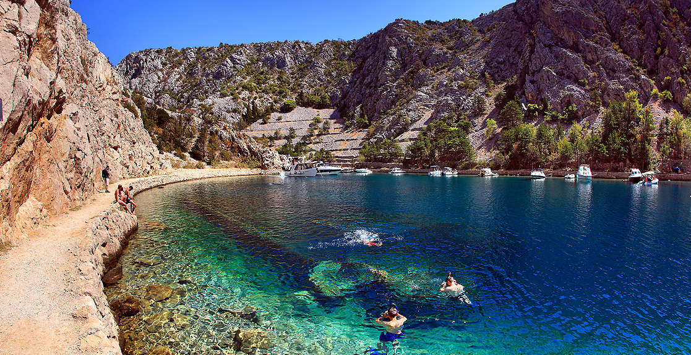

Uvala Zavratnica
Dodir mora u planinama
Planirate li izlet od kojeg očekujete otkrivanje novih i zanimljivih destinacija svakako posjetite Zavratnicu - „značajni krajobraz“ i jednu od najljepših uvala hrvatske obale. Po svom postanku Zavratnica je potopljena bujična dolina s kanjonskim liticama visokim oko 100 m. Dužina zaljeva iznosi oko 900 m, a širina varira između 50 i 150 m. Nastala je u slojevima kredne starosti iz kojih se zbog velike razlomljenosti formiraju brojni sipari koji su zaustavljeni podzidima, te sadnjom drveća i niskog raslinja. U Zavratnici je izbrojano 129 biljnih vrsta, od čega 100 autohtonih i 29 alohtonih vrsta.
Početkom 20. stoljeća izgrađena je gornja staza s vidikovcem, te šetnica uz more. Negdje u to vrijeme Zavratnica postaje skrovito ljetovalište bečke i praške elite. Modrim nijansama mora u uvali se suprotstavljaju sive nijanse velebitskog kamena, zelenilo oskudne vegetacije i tamni oblaci sjene stabala koji u toplim ljetnim danima putuju samo dijelovima staze. Nije onda ni čudno da privlačnosti Zavratnice nije mogao odoljeti niti poznati književnik Vjenceslav Novak koji je ovdje pronalazio inspiraciju za svoja djela.